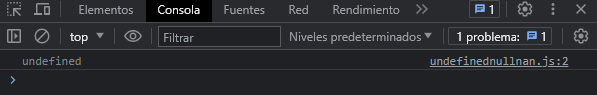
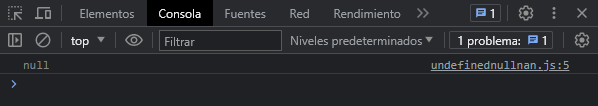
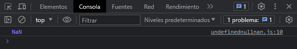

#undefined
Es una variable a la que no se le ha asignado un valor. Un metodo o sentencia tambien devuelve undefined si la variable que se esta evaluando no tiene asignado un valor. Veamos un ejemplo:
let nombreCompleto
console.log(nombreCompleto)
Nos muestra en consola lo siguiente:
#null
Representa un valor intencionalmente definida por el programador como nulo o vacio. Veamos un ejemplo:
let estadoCivil = null
console.log(estadoCivil)
Nos muestra en consola lo siguiente:
La diferencia entre - undefined - & - null - es, la primera, su valor no ha sido definido ni por el lenguaje ni por el programador, por lo tanto, javascript devuelve que es un valor indefinido, la segunda, el valor a sido intencionalmente definido como nulo por el programador.
#NaN
Es un valor que representa = Not a Number -. Nos devolvera NaN cuando estemos realizando alguna operacion de un numero con otro tipo de dato. Veamos un ejemplo:
let nombre = "odiseo"
let resultado = nombre * 100
console.log(resultado)
Nos muestra en consola lo siguiente:
